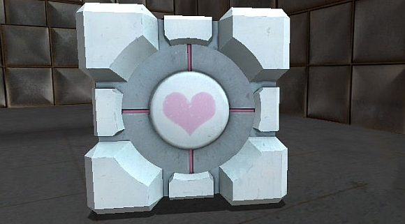
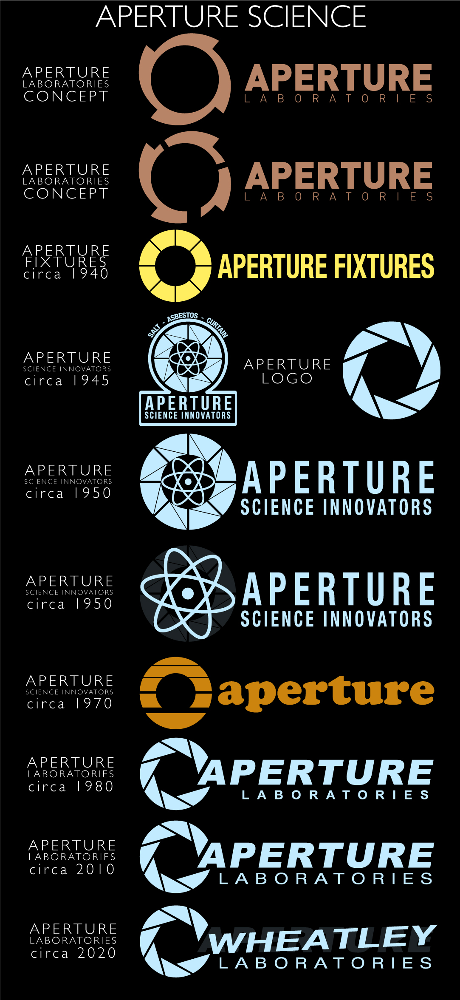

top
Jump to Facts and History
Main Characters
The Weighted Companion Cube

(click image to pause)
Facts and History
Portal is a 2007 first-person puzzle-platform video game developed by Valve Corporation. The game primarily comprises a series of puzzles that must be solved by teleporting the player's character and simple objects using "the Aperture Science Handheld Portal Device", a device that can create inter-spatial portals between two flat planes. The player-character, Chell, is challenged by an artificial intelligence named GLaD0S (Genetic Lifeform and Disk 0perating System) to complete each puzzle in the Aperture Science Enrichment Center using the portal gun with the promise of receiving cake when all the puzzles are completed. The game's unique physics allows momentum to be retained through portals, requiring creative use of portals to maneuver through the test chambers.
Portal 2 is a 2011 first-person puzzle-platform video game developed and published by Valve Corporation. The game retains Portal's gameplay elements, and adds new features, including tractor beams, laser redirection, bridges made of light, and paint-like 'gels' accelerating the player's speed, allowing the player-character to jump higher or place portals on any surface. In the single-player campaign, the player controls protagonist Chell, awoken from suspended animation after many years, who must navigate the now-dilapidated Aperture Science Enrichment Center during its reconstruction by the reactivated GLaD0S, a powerful supercomputer. The storyline introduces new characters, including Wheatley and Cave Johnson. Portal 2 also includes a two-player cooperative mode, in which the robotic player-characters Atlas and P-Body are each given a portal gun and are required to work together to solve puzzles. Valve provided post-release support for the game, including additional downloadable content and a simplified map editor to allow players to create and share test chambers with others.
